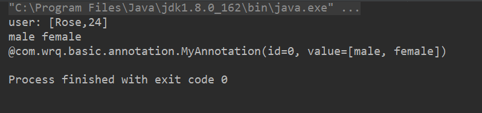

Java 注解是JDK5.0引入的注释机制，可以被使用在类，方法，参数等地方中，并且可以通过Java的反射机制获取注解中的内容，
注解相当于标签，可以标识方法，类或属性具有某些特征，在编译器生成的类文件时，可以被嵌入到字节码中。另外用户可以自
定义注解，完成定制化的开发，尤其是在利用springboot进行项目开发时，我们会经常使用注解管理spring容器的bean，从而大大
提高了开发的效率。
在开发过程中，我们可以经常看到一些内置的注解：
@Override ：用于校验该方法是否是重载方法，如果不是重载方法，而且还是使用这个注解则会报错。
@Deprecated ：用于过时的用法，如果继续使用，编译器会给出警告
@SuppressWarnings ：用于指示编译器忽略注解中声明的警告
在编写自定义注解时，也会使用一些元注解：
1，@Retention：定义了注解的保留策略（RetentionPolicy）
@Documented
@Retention(RetentionPolicy.RUNTIME)
@Target(ElementType.ANNOTATION_TYPE)
public @interface Retention {
/**
* Returns the retention policy.
* @return the retention policy
*/
RetentionPolicy value();
}其中RetentionPolicy是一个枚举类型，共有三种枚举值
（1）CLASS：此注解的缺省行为，表明在程序运行期间，注解可以被编译器保存在类文件中，但不会被虚拟机保留。
（2）RUNTIME：表明在程序运行期间，既可以被编译器保存在类文件中，也被虚拟机保留，所以注解的内容可以通过反射机制读取
（3）SOURCE：注解会被编译器丢弃
2，@Target：定义了注解的作用目标
@Documented
@Retention(RetentionPolicy.RUNTIME)
@Target(ElementType.ANNOTATION_TYPE)
public @interface Target {
/**
* Returns an array of the kinds of elements an annotation type
* can be applied to.
* @return an array of the kinds of elements an annotation type
* can be applied to
*/
ElementType[] value();
}其中ElementType是一个枚举类型，并且表明@Target注解拥有的是枚举类型的数组，可以被指定多个值。
（1）TYPE：允许作用在类，接口或者枚举声明上
（2）FIELD：允许作用在属性字段上
（3）METHOD：允许作用在方法上
（4）PARAMETER：允许作用在参数上
（5）CONSTRUCTOR：允许作用在构造器上
（6）LOCAL_VARIABLE：允许作用在本地变量上
（7）ANNOTATION_TYPE：允许作用在注解类型上
（8）PACKAGE：允许作用在包上
JDK1.8之后，新增TYPE_PARAMETER和TYPE_USE两个属性
（9）TYPE_PARAMETER：允许作用在类型参数上
（10）TYPE_USE：允许作用在使用类型的地方上
3，@Documented 定义注解可以包含在javadoc中
4，@Inherited：表明注解可以被子类集成使用
1，使用关键字@interface进行自定义注解，注解内容可以指定注解属性的类型，缺省值等
1 @Documented
2 @Retention(RetentionPolicy.RUNTIME)
3 @Target({ElementType.METHOD, ElementType.FIELD})
4 public @interface MyAnnotation {
5
6 int id() default 0;
7
8 String[] value();
9 }自定义的注解MyAnnotation包含id和value两个属性，其中属性id的类型为int，且缺省值为0，属性value的类型为String数组。
注意，在声明属性时，属性名后跟的小括号一定要加上。@MyAnnotation表明可以被使用在方法或属性字段上，并且被编译器保存在类文件中，
一直驻留在JVM虚拟机中，所以可以通过反射访问到注解中的内容。
2，使用方法
1 public class User {
2
3 @MyAnnotation(value = {"male", "female"})
4 public void getUser(String name, int age) {
5
6 System.out.println("user: [" + name + "," + age + "]");
7 }
8 }@MyAnnotation被使用在getUser方法上，并且指定注解的vlue属性值为male和female
3，利用反射获取注解
1 public class MyAnnotationTest {
2
3 public static void main(String[] args) throws Exception {
4
5
6 User user = new User();
7 //通过返回获取实例
8 Class<User> userClass = User.class;
9
10 Method method = userClass.getMethod("getUser", String.class, int.class);
11 //利用反射调用方法
12 method.invoke(user, "Rose", 24);
13
14 //获取方法上的MyAnnotation注解
15 if (method.isAnnotationPresent(MyAnnotation.class)) {
16
17 //获取方法上的注解实例
18 MyAnnotation annotation = method.getAnnotation(MyAnnotation.class);
19
20 String[] value = annotation.value();
21
22 for (String v : value) {
23 System.out.printf("%s ", v);
24 }
25 } else {
26 System.out.println("没有应用MyAnnotation注解");
27 }
28
29 System.out.println();
30
31 //获取方法上的所有注解
32 Annotation[] annotations = method.getAnnotations();
33 for (Annotation annotation : annotations) {
34 System.out.println(annotation);
35 }
36
37 }
38
39 }利用Java的反射机制获取方法上的注解内容，通过Method类的getAnnotation方法可以获取到指定的注解，getAnnotations方法可以获取到方法上的所用注解。
运行结果：

注解相当于标签，利用反射机制可以获取到注解中的内容，可以作用在类，方法，参数等地方，使其具有某些属性，通过注解对程序进行标识来实现特定的处理，让编写的程序更加简洁。